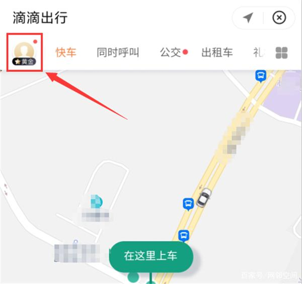
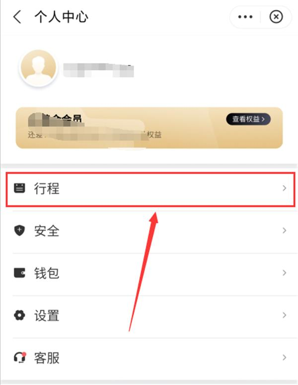
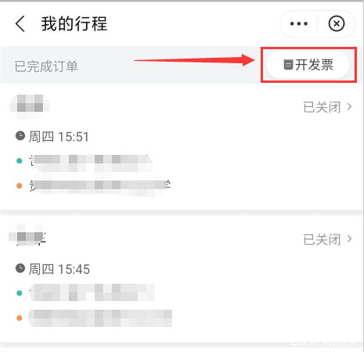
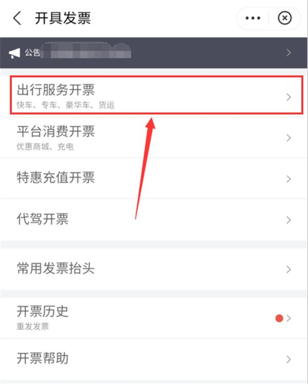
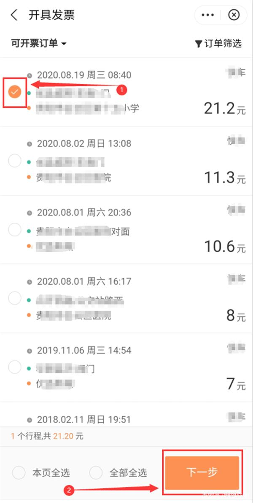
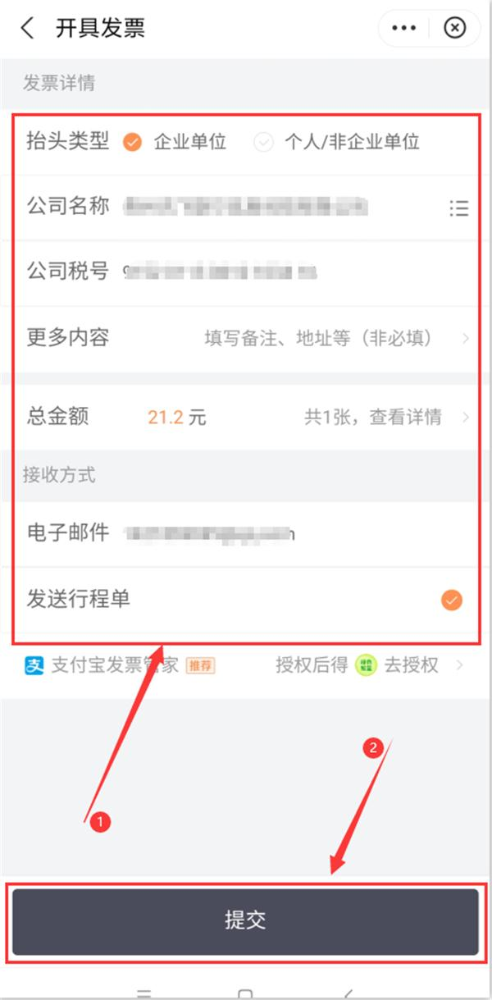
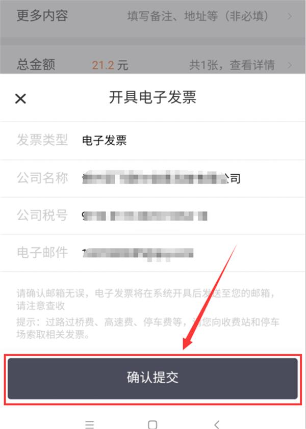

在滴滴出行里打车后，有需要发票来报账，我们如何开具打车电子发票呢？下面具体介绍开具滴滴出行打车电子发票的操作步骤
1、进入滴滴出行主界面，在左上角点击个人头像。
2、打开【个人中心】页面后，点击【行程】所在行任意位置即可。
3、进入【我的行程】页面后，在右上角点击【开发票】按钮。
4、进入【开具发票】页面，点击【出行服务开票】所在行任意位置。
5、接下来，在【可开票订单】列表中，根据开票需要勾选要开具发票的所有订单（或在底部勾选全部全选或本页全选），把需要开具发票的所有订单勾选好后点击【下一步】按钮。
6、在【发票详情】下，把所有开票信息填写好，接着点击【提交】按钮进行提交申请。
7、在弹出的对话框上，如确认开票信息无误，直接点击【确认提交】按钮，否则关闭该对话框，返回发票详情页对开票信息进行修改。
到此，在滴滴出行申请开具发票已完成，等待开票并注意查收邮件即可。